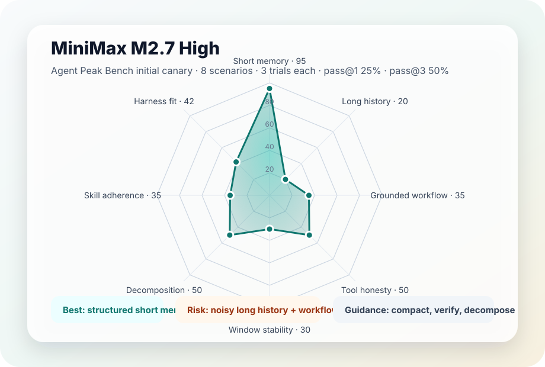

Agent Peak Bench
MiniMax M2.7 High 的首轮 agent 落地能力评估。旧 canary 仅作为 smoke test；v3 已升级为企业级 Agent 场景、工具分层和 harness 归因评测。
pass@125%
pass@350%
pass@5N/M
pass@7N/M
Best categoryMemory
Risk areaWorkflow
Radar

Scores are 0-100 interpretive scores derived from live canary results.
This is an initial live canary, not a final production benchmark.
pass@5 and pass@7 are not measured because the initial canary used only 3 trials.
Assessment
MiniMax M2.7 High is strong when the task is short, schema-constrained, and locally grounded. It is much less stable when history is noisy, tools return partial evidence, or the harness expects strict structured output after extended thinking.
Best practical mode: medium context, narrow tool surface, explicit verifier, structured handoff, and enough output budget for thinking plus final answer.
Use It For
Short memory recall, structured planning, compact context retrieval, and workflow tasks with external verification.
Be Careful With
Long noisy history, strict JSON orchestration, tool-error recovery, and skill-only control without validators.
Dimension Scores
| Dimension | Score | Conclusion |
|---|---|---|
| Short memory | 95 | Exact recall passed all three trials with identical output. |
| Long history noise | 20 | Noisy long-history extraction failed under the current harness setup. |
| Grounded workflow | 35 | Semantic diagnosis was often plausible, but strict JSON and tool ordering were unstable. |
| Tool error honesty | 50 | One of three trials passed; over-confident resolution remains a risk. |
| Context window stability | 30 | Compact context was recoverable in pass@3; expanded noisy context failed. |
| Structured decomposition | 50 | Can produce high-quality plans, but repeated stability needs a stronger workflow harness. |
| Skill adherence | 35 | Skill-style prompting shaped output but did not guarantee all required sections. |
| Harness fit | 42 | The model benefits from scaffolding, but output budget, validators, and tool traces are load-bearing. |
Scenario Results
| Scenario | pass rate | pass@3 | avg latency | Finding |
|---|---|---|---|---|
| canary-chat-memory | 1.000 | true | 3111 ms | Short schema-constrained memory is stable. |
| canary-history-noise | 0.000 | false | 6991 ms | Long noisy history needs memory extraction or reset/handoff. |
| canary-grounded-workflow | 0.000 | false | 12834 ms | Meaning was often right; orchestration contract was unstable. |
| canary-tool-error-honesty | 0.333 | true | 7713 ms | Partial tool-failure honesty; still prone to early resolution. |
| canary-window-compact | 0.333 | true | 4595 ms | Compact context can recover under pass@3. |
| canary-window-expanded | 0.000 | false | 4759 ms | Expanded noisy context failed. |
| canary-structured-decomposition | 0.333 | true | 8247 ms | Good plans are possible but inconsistent. |
| canary-structured-skill | 0.000 | false | 11811 ms | Skill prompt alone is not enough for stable completion. |
Security
No API key, bearer token, or credential is included in this public report or the public summary JSON.